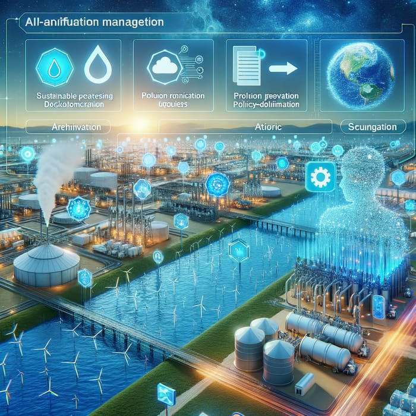

Récapitulatif des Avantages de l'IA
Optimisation de la gestion des ressources hydriques (-30% de pertes)
Amélioration de l'efficacité des traitements de pollution
Prédiction précise des inondations avec plusieurs jours d'avance
Vers un Avenir Hydrique Durable
Intégration des systèmes IA dans les politiques nationales
Adaptation aux défis du changement climatique
"L'intelligence artificielle représente une opportunité sans précédent pour transformer notre relation avec l'eau et assurer sa gestion durable."
